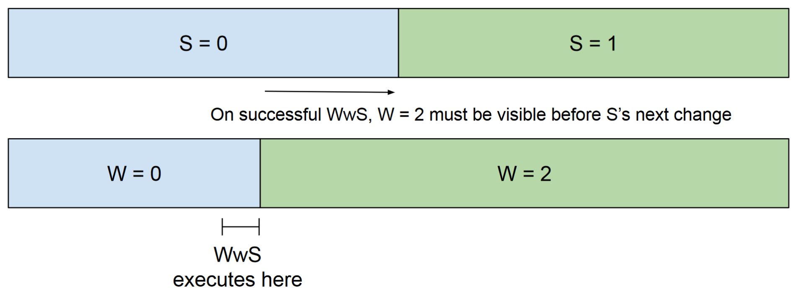

|
Version 11.3.1
|
|
Version 11.3.1
|
Caution: the Architecture Guide is not updated in lockstep with the code base and is not necessarily correct or complete for any specific release.
WiredTiger is a highly multi-threaded application which means that a large number of operations can happen in parallel. In order to be performant WiredTiger utilizes a number of lock-free programming mechanisms. Commonly used patterns are documented here. A pattern in this instance is a combination of one or more lock-free programming techniques.
This architecture guide page aims to aid developers in understanding and using these patterns in the future.
When a writer thread needs to share data with one or more reader threads concurrently the message passing pattern can be used. For this pattern to work two variables are required. A "payload" which is the data being shared, and a "signal" variable. The payload could be a number of things, e.g:
For the writer to share this payload with readers it needs to perform two steps in the correct order. Firstly it writes the payload, then writes a signal variable with a release write. The reader threads will read the signal variable to know if the payload is safe to read. The release write must use the WT_RELEASE_WRITE macro described in Release.
The reader threads must read with the opposite order, to do so they read the signal variable using the acquire read macro WT_ACQUIRE_READ. Then they read the payload, the WT_ACQUIRE_READ macro provides the required ordering semantics. The macro is described in Acquire. If the signal variable indicates the payload is safe to read the reader thread can read the payload.
This pattern is used in many places in WiredTiger but they are not listed here as the list will become stale.
Example pseudocode:
Given an array of size Z, where objects within the array may be unused. The slot counter pattern provides a variable - whose name varies depending on implementation but we will refer to it as slot_count - to readers to determine how many slots in that array need reviewing. That way the reader only has to walk slot_count slots in the array instead of traversing the whole list. This allows for dynamic array growth and provides an optimization as readers would otherwise have to walk the full array.
If the array size is fixed then no ordering is defined for slot_count. If the array is allowed to grow then additional ordering is defined for slot_count. See Growable arrays for further details.
This pattern should only be used if performance is critical in the read path, prior to usage of this pattern the following determinations should be made:
When an algorithm initializes an object in the array there are two outcomes with respect to slot_count:
slot_count the slot will be used and the object in the slot will be initialized.slot_count then the slot at index slot_count is used and slot_count is incremented.Additionally the writers must follow the Message passing with acquire and release pattern when initializing the slot. Firstly the object / slot must be initialized with its payload then a flag or pointer can be set for readers to safely read the object held in the slot itself.
Reading from this array requires readers to loop through the array, up until slot_count. Readers must read slot_count only once prior to entering the body of the loop and ensure a local copy of the value is used for the remainder of the loop.
When reading a specific slot, readers must follow the Message passing with acquire and release pattern by reading a flag or pointer indicating the slot is initialized prior to reading the contents of the object held in the slot.
Additional writes to the array can occur concurrently, and as a copy of slot_count is taken by readers prior to their traversal they may miss objects being initialized concurrently. The reader algorithm must take care to ensure that once it has entered the loop new slots being used in the array will not impact the outcome of the loop as it is not guaranteed to see those.
A growable array is one where the value of Z is not fixed and the user can increase the array size while the array is in use. Here we will discuss the additional semantics required to support a growable array.
Note: Generations handle the life cycle, creation and freeing of the growable array and that will not be covered here.
If a new slot is required in the array, but all slots are in use and slot_count is equal to the size Z of the array then the array must grow. The variable slot_count has additional ordering defined when swapping in the array. The array pointer swap must happen before slot_count is incremented. This requires a Release.
Readers must respect the writer side ordering. The slot_count must be read prior to reading the array pointer. This requires an Acquire. If this ordering is not respected the reader could read an old array pointer but a new slot_count and encounter an array index out of bounds exception.
The fixed size version of this pattern is used to maintain the Connection's sessions array. The dynamically growing version of this pattern is used to maintain the hazard pointer array for a Session.
The Write while Stable (WwS) pattern performs a write to a memory location W, but only considers that write to be successful if the value of a separate memory location S has not changed by the time the write to W has become visible. As a result when the WwS pattern succeeds, the next time the value of S changes all threads can already see the update to W.
In this pattern the write to W always takes place, however the writing thread will not consider the update to be valid until it has verified that S is unchanged. The writing thread is responsible for either retrying or rolling back the write to W on a failure. Threads reading from W must be able to handle or ignore these interim "failed" writes to W, and must perform a read-acquire on S before reading W.

This pattern should only be used in performance critical paths. In all other cases a lock should be used as it provides a much simpler interface for developers when reading and debugging code.
Note: The following example assumes familiarity with WiredTiger's Generations.
In the generation code the __wt_session_gen_enter function the current value of the connection->generation (S) and writes it to session->generation (W). Independently a second thread executing __gen_oldest will first read connection->generation and then walk all session->generations, reporting the smallest generation seen.
Without this pattern __wt_session_gen_enter could enter a generation G, the connection->generation could be advanced to G+1, and the __gen_oldest thread would see the update to connection->generation G+1 but not the write to the session->generation G. This would incorrectly report the oldest generation as G+1 while the session->generation G is still active.
On a successful WwS the write to session->generation must be visible before advancing the connection->generation. If the connection->generation has not been advanced the new session->generation is visible and the oldest generation will be equal to it.
On a failed WwS __wt_session_gen_enter must retry and enter the new generation G+1. If __gen_oldest sees the "invalid" session->generation of G it will report an older generation that the actual oldest generation. This is considered acceptable as it temporarily delays freeing a resource which has no impact on correctness.
This is the trimmed down version of the writing thread code in the generations logic:
Note: This usage pattern behaves like a lightweight version of a trylock. In non-critical code paths a trylock should be preferred as it also provides acquire/release semantics around the critical section, guaranteeing instructions inside the critical section take place within the lock.
Multiple threads will often compete to enter a critical section or execute functions that should be limited to a single thread. For example in __wt_cache_pool_server all threads will attempt to become the pool manager but only one manager is allowed. Whichever thread comes first will become the manager.
To implement this usage pattern all threads attempt to set some shared flag F via a compare_and_swap. On success the winning thread is allowed to continue into the critical section. When the thread leaves the critical section it unsets the flag for the other threads to claim. Threads that fail to claim the flag F must decide whether to continue, abort or retry.
In __wt_cache_pool_server all threads attempt to set the pool_managed flag with a call to __wt_atomic_cas8(&cp->pool_managed, 0, 1) and only the successful thread is allowed then to set the WT_CACHE_POOL_MANAGER flag and perform the duties of the pool manager.